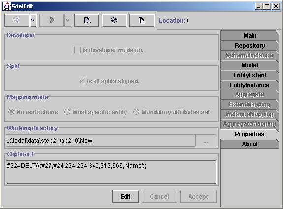

Properties Tab
Properties tab contains information on
the properties of the application. It have no
relation to SDAI directly. All properties listed in this tab can also
be
found in SdaiEdit.properties file located in repos path as a special
directory
application.

Developer
Developer check box switches on/off
links from pages to a dictionary
data. This is needed for users who are not interested in meta data.
Usually
type labels contain links to meta data.
Split
The split component separates types and
values of the attributes on the EntityInstance
and the InstanceMapping pages.
Therefor you can change sizes between these areas. Attributes are
aligned to one split by default, so all attributes
values begin at the same position. You can make the attributes
value to be split by entity data types. So you can have more space for
attributes' values, but attributes will not be aligned by one line.
Mapping Mode
This will impact users witch are
working with a mapping. There are three level
restrictions for mapping related data. The first one (default) is No restrictions.
The second one will impact displayed types available for instances. It
will ignore not specific types for the representation of instances. The
third restriction requires all mandatory attributes to be set.
Otherwise it will be minded as
not fulfill mapping and will not be shown.
Working Directory
This field represents default directory
where yours part 21 files will be placed
in or taken from. It will be changed automatically if you choose other
path in save
or open dialogs. Also you can specify it here, by typing the path in
the field or choosing from the dialog.
Clipboard
Clipboard shows data stored in our own
session clipboard which is common
for all application ran on same java virtual machine. It is used for
editing
operations in SdaiEdit. Here you can view the content of the clipboard.
Changing Properties
In the beginning all properties of the
page are disabled.You can change them by pressing Edit button.
Then you must Accept or Cancel changes. Accept
will reset
all you changed properties for pages immediately.